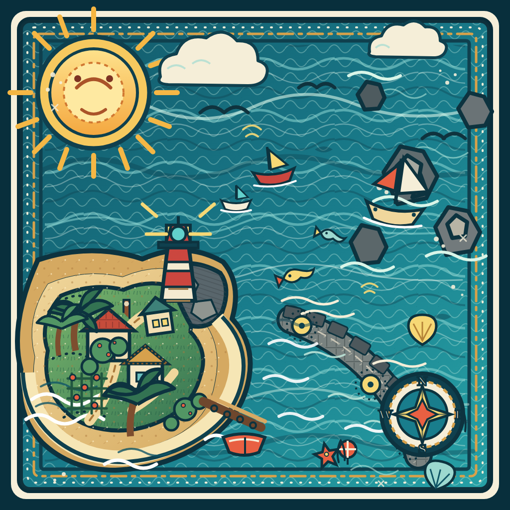

This local development page compiles ./targets/coastal-target.png into
coastal-target.mind with the vendored MindAR 1.2.5 browser compiler. No image or camera data leaves
the browser. The compiled file is committed so the experiment never requires a visitor to compile anything.

The target image is loading.
Open this page through npm run dev at /ar/compile.html. It is a local authoring tool,
not part of the visitor flow.